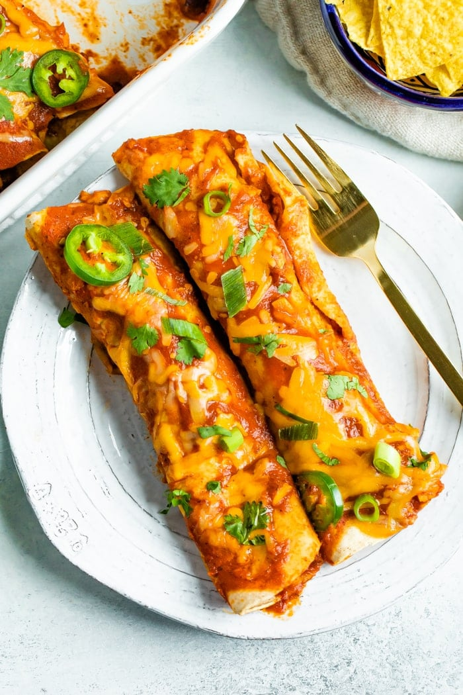

Enchiladas

Description
The image above shows what your enchiladas could look like depending on the
seasoning you use in the recipe. An enchilada is a flour or corn tortilla rolled
around a filling and vovered with a savory sauce. Enchiladas can be filled with
various ingredients, including meats, cheese, beans, potatoes, vegetables, or
combinations. In the sections below, the ingredients and steps will be listed.
Ingredients
- 1 lb (at least 80%) ground beef
- 2 cans (10 oz each) Old El Paso red enchilada sauce
- 1 can (4.5 oz) Old El Paso chopped green chiles
- 1 package (8.2 oz) Old El Paso flour tortillas for soft tacos & fajitas (6 inch)
- 1 1/2 cups shredded Cheddar cheese (6 oz)
Step-by-step
- Preheat Oven to 350 Degrees
- In 10-inch nonstick skillet, cook beef over medium-high heat 5 to 7 minutes,
stirring occasionally, until thoroughly cooked; drained. Stir in 1/2 cup of the
enchilada sauce and the chiles.
- Spread 1/2 cup of the enchilada sauce evenly in baking dish. Spread 1/4 cup beef
mixture down center of each tortilla; sprinkle with 1 tablespoon cheese. Wrap
tortillas tightly around filling, placing seam side down in baking dish. Top with
remaining enchilada sauce. Sprinkle with remaining cheese.
- Bake 20 to 25 minutes or until hot and bubbly. Let stand 5 minutes before
serving.